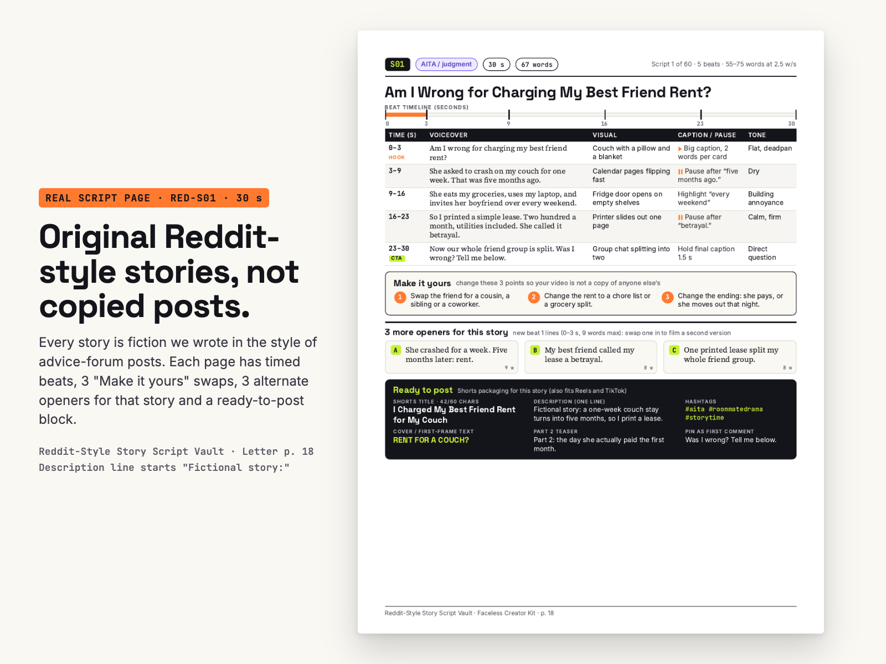
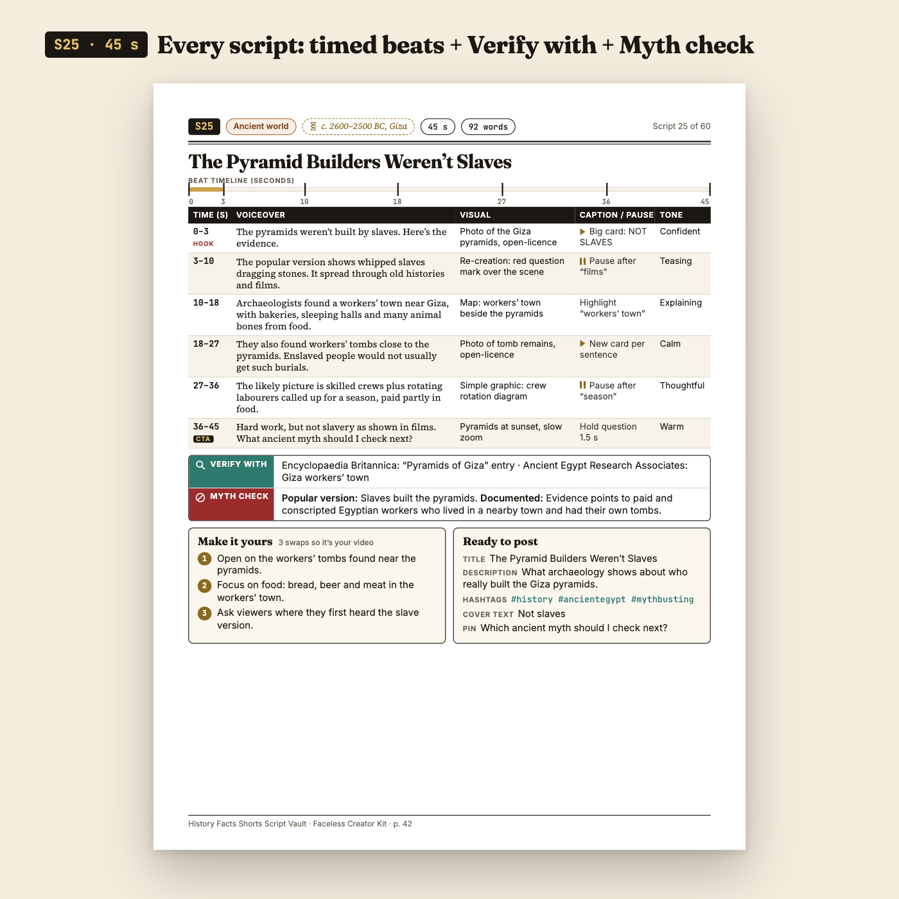
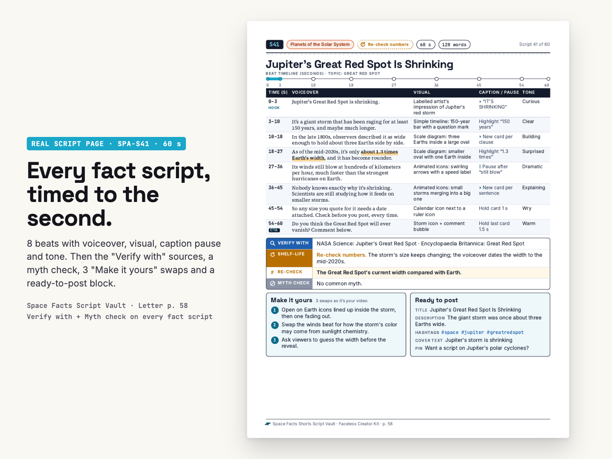
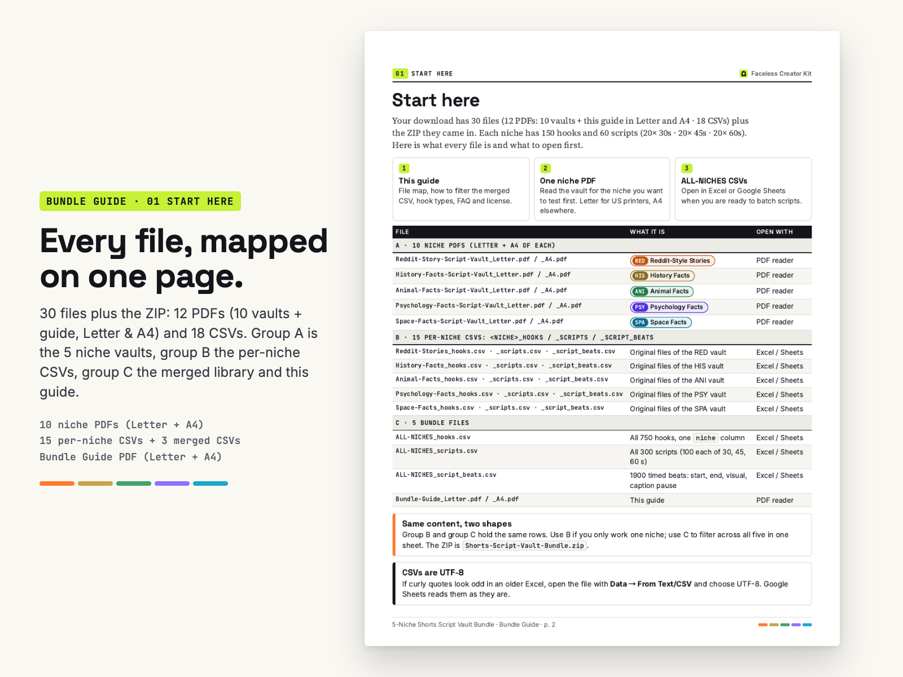
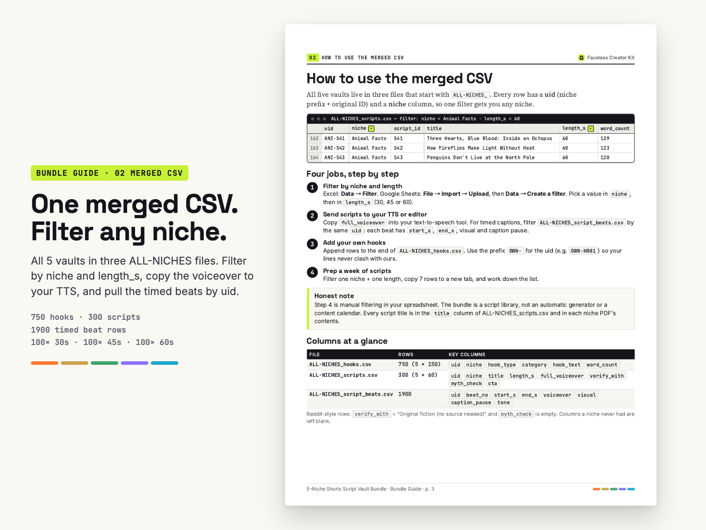
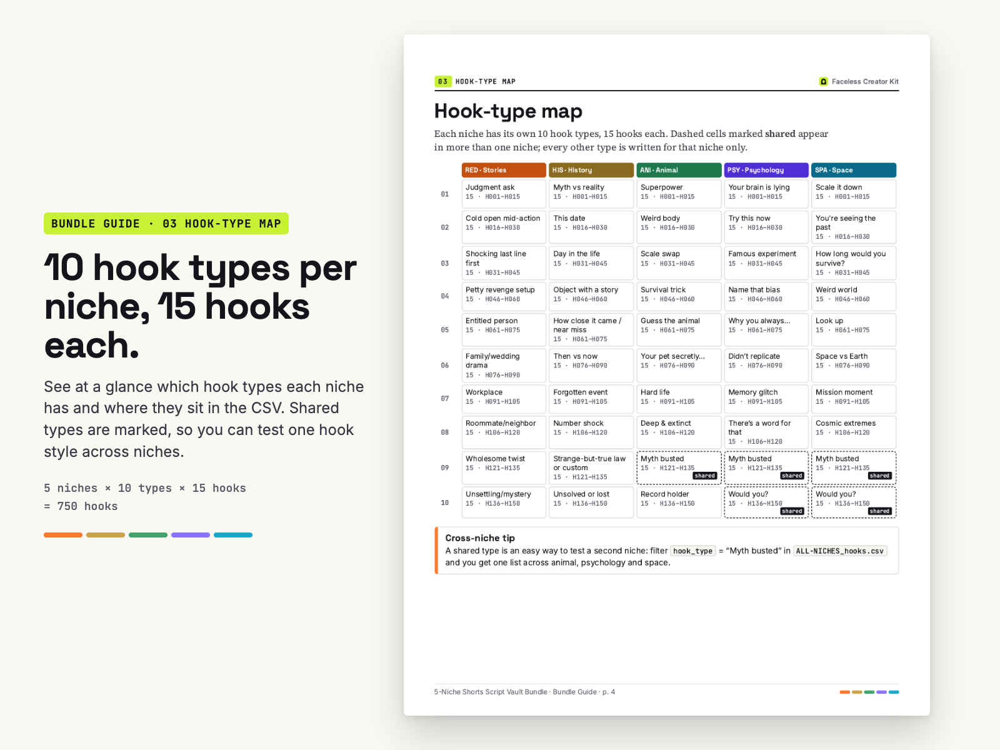
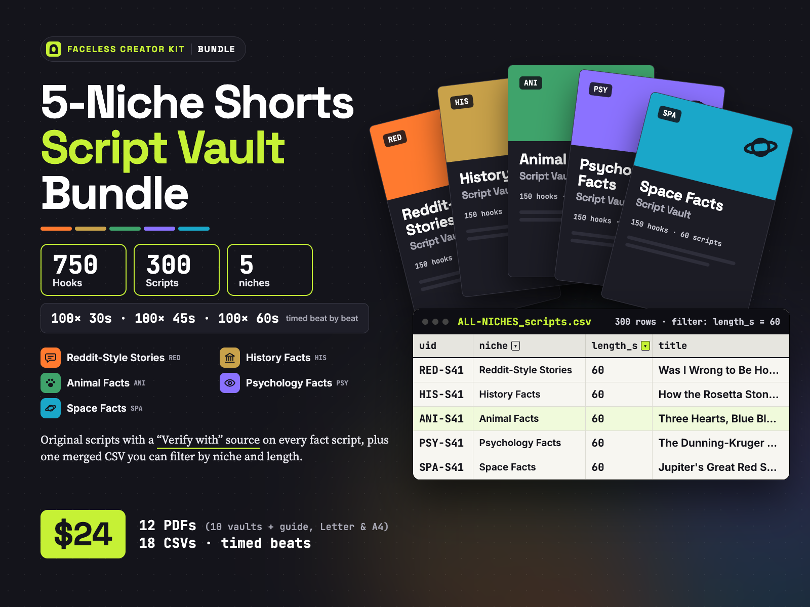

750 hooks and 300 original, timed faceless Shorts scripts across 5 niches, plus one merged CSV you can filter by niche and length.
Reddit-Style Stories (original fiction), History Facts, Animal Facts, Psychology Facts and Space Facts: 100× 30s · 100× 45s · 100× 60s, every fact script source-pointed. 12 PDFs (Letter + A4) + 18 CSVs + one ZIP. From Faceless Creator Kit, the creator-tools imprint of Hustle Studio.

$24.00 USD, $24 one-time, instant download ($0.08 per script; the 5 vaults bought one by one = $60)
Buy the bundle: $24 See a real script page from every niche🔒 Secure checkout. Payment runs on Waffo Pancake, our merchant of record: it processes the card payment and sales tax and sends your receipt. This site is a simple static page; your card details never touch it. Right after payment you go straight to the download page with a link for every file.
↩️ 14-day refund. If a file won't open, or the bundle doesn't match this page, email chenphien@gmail.com within 14 days of purchase for a full refund through Waffo Pancake (see Terms).
✅ Satisfaction guarantee. If the scripts don't suit your channel, email us within 14 days and you get your money back. No form, no questions.
🛠️ Corrections are free. Tell us a script ID (e.g. ANI-S41) where a fact doesn't match its own “Verify with” source. We check it, and if it's wrong a corrected file goes on the same download page for every buyer. We don't promise new volumes, only fixes.
🆕 New shop, honest about it. No reviews yet and we won't invent any, and we have no buyer videos to show you. Instead, this page shows a real script page from each of the 5 niches, 3 scripts as text word for word, a free 2-page sample PDF and a demo of the merged CSV.
Each single vault is $12 and holds the same 150 hooks and 60 scripts for its niche as this bundle:
Testing one niche? One single vault ($12) is the cheapest way in. Two singles cost $24, the same as this bundle, so from 2 niches up the bundle gives you the other 3 niches and the merged CSV at no extra cost. Three singles would be $36.
niche and length_s in Excel or Google Sheets to pick any niche and length.Every image below is a real page from the paid PDFs or the Bundle Guide. The 4 fact-niche pages come from the same vault PDFs that are in this bundle (they are also shown on the single-vault pages, so one of them still carries the single price, $12).






Screen recording with the real merged CSV: filter Animal Facts + 60 s, copy the voiceover of ANI-S41 into a text-to-speech box, then filter the beats file by the same uid for timed captions.
| Time (s) | Voiceover | Visual | Caption / pause |
|---|---|---|---|
| 0–3 | Am I wrong for charging my best friend rent? | Couch with a pillow and a blanket | Big caption, 2 words per card |
| 3–9 | She asked to crash on my couch for one week. That was five months ago. | Calendar pages flipping fast | Pause after “five months ago.” |
| 9–16 | She eats my groceries, uses my laptop, and invites her boyfriend over every weekend. | Fridge door opens on empty shelves | Highlight “every weekend” |
| 16–23 | So I printed a simple lease. Two hundred a month, utilities included. She called it betrayal. | Printer slides out one page | Pause after “betrayal.” |
| 23–30 | Now our whole friend group is split. Was I wrong? Tell me below. | Group chat splitting into two | Hold final caption 1.5 s |
Post description: Fictional story: a one-week couch stay turns into five months, so I print a lease.
Make it yours: Swap the friend for a cousin, a sibling or a coworker. · Change the rent to a chore list or a grocery split. · Change the ending: she pays, or she moves out that night.
“Was I wrong to be honest in my toast? My best friend Jules got married last month. I was the maid of honor. Her fiancé, Marco, had cancelled on her twice before. Both times, I was the one she called. So in my speech, I said, ‘Marco, she waited for you. Make sure she never has to wait again.’ The room went quiet. Marco's mom stood up and walked out. Jules stared at her plate. Afterwards, Marco found me by the cake. He said I was right, and thanked me for saying it. Jules hasn't spoken to me since. She says it was her day, not my moment. I meant it kindly. So, was I wrong? Tell me in the comments.”
121 words, 8 timed beats in the beats file. Post description: “Fictional story: as maid of honor, I mention the groom's past cancellations in my toast.”
“An octopus has three hearts and blue blood. Two of those hearts pump blood through the gills. The third pumps it to the rest of the body. And here's the strange part: that third heart seems to stop beating while the octopus swims. Why blue? Octopus blood carries oxygen with a copper-based protein called hemocyanin, not the iron-based one in ours. Hemocyanin turns blue when it picks up oxygen, and it works well in cold water with little oxygen. Then there's the brain. Around two-thirds of an octopus's nerve cells sit in its arms, not its head. And those are arms, not tentacles. Octopuses have eight arms. Squid and cuttlefish have arms plus two longer tentacles. Three hearts, blue blood, eight arms. Which ocean animal should I explain next?”
Verify with: Encyclopaedia Britannica: “octopus” · Smithsonian Ocean: cephalopod pages
Myth check: Popular version: An octopus has eight tentacles. Documented: It has eight arms; tentacles are the two extra, longer limbs of squid and cuttlefish.
The hook-type map and 10 hooks, 2 from each niche, copied word for word from the CSV.
Download the free sample12 PDFs (10 vaults + guide, Letter & A4) and 18 CSVs. Every file has its own download link, and the ZIP holds all 30.
| File | Format | Pages / rows |
|---|---|---|
Reddit-Story-Script-Vault_Letter.pdf / _A4.pdf | PDF, Letter + A4 | 79 pages each |
History-Facts-Script-Vault_Letter.pdf / _A4.pdf | PDF, Letter + A4 | 80 pages each |
Animal-Facts-Script-Vault_Letter.pdf / _A4.pdf | PDF, Letter + A4 | 80 pages each |
Psychology-Facts-Script-Vault_Letter.pdf / _A4.pdf | PDF, Letter + A4 | 80 pages each |
Space-Facts-Script-Vault_Letter.pdf / _A4.pdf | PDF, Letter + A4 | 80 pages each |
Bundle-Guide_Letter.pdf / _A4.pdf | PDF, Letter + A4 | 6 pages each: file map, CSV how-to, hook-type map, FAQ, license, support email |
15 per-niche CSVs: <Niche>_hooks.csv, <Niche>_scripts.csv, <Niche>_script_beats.csv for Reddit-Stories, History-Facts, Animal-Facts, Psychology-Facts, Space-Facts | CSV, UTF-8 | 150 hooks + 60 scripts + one row per beat, per niche |
ALL-NICHES_hooks.csv | CSV, UTF-8 | 750 rows |
ALL-NICHES_scripts.csv | CSV, UTF-8 | 300 rows: 100 each of 30, 45 and 60 s |
ALL-NICHES_script_beats.csv | CSV, UTF-8 | 1900 rows |
Shorts-Script-Vault-Bundle.zip | ZIP | All 30 files above in one download |
You need a PDF reader and Excel, Google Sheets or any spreadsheet app for the CSVs.
Testing faceless niches is slow when every niche means a new pack, a new format and a new spreadsheet. This bundle puts five script vaults in one download, in one format, with one merged CSV library.
You get 300 original Shorts scripts: 100× 30s · 100× 45s · 100× 60s, written once each (no long and short versions of the same story). Every script is laid out beat by beat: the time range, the voiceover line, the visual to show, the caption or pause cue and the tone of voice. Each script page also has three “Make it yours” swaps and a ready-to-post block with title, description, hashtags and cover text.
The four fact niches (History, Animal, Psychology, Space) carry a “Verify with” source pointer and a myth check on every script. Facts and numbers get updated, so the guide asks you to check that source before you publish. The Reddit-style niche is original fiction written in the style of advice-forum stories; it is not copied from Reddit or any user, and each post description starts with “Fictional story:”.
The bundle adds three merged files: ALL-NICHES_hooks.csv, ALL-NICHES_scripts.csv and ALL-NICHES_script_beats.csv. Every row has a uid (like ANI-S41) and a niche column. Filter Animal Facts + 60 s, copy the full voiceover into your text-to-speech tool, then filter the beats file by the same uid for timed captions. You can add your own hooks at the end of the hooks file with an OWN- uid.
Honest limits: this is a script library, not an AI generator or a content calendar. Batching a week means filtering one niche and length and copying 7 rows yourself. 60 scripts in one niche cover about two months of daily posts in that niche. It has no stock footage, images, music or voice audio, and no product can promise views or income.
Not included: true crime, dark history, finance, motivation, AI tools, coaching, fitness or supplement niches; any language other than English; stock footage, images, music or voiceover audio; scripts written only for you.
I only post Space (or one other niche). Should I buy this?
No. Buy the single $12 vault for that niche (links above). It has the same 150 hooks and 60 scripts for that niche as this bundle.
Are the other 290+ scripts as good as the ones shown here?
They are built the same way: every one of the 300 is a full page with the same beat table, swaps and ready-to-post block, and every fact script has its “Verify with” and myth check lines. Each single-vault page shows more real pages from its niche. If what you get doesn't match this page, the 14-day refund covers you.
Are the facts checked? Who checked them?
We are not historians, zoologists, psychologists or astronomers, and no outside expert reviewed the scripts. Each fact script names a “Verify with” source and has a myth check. Please confirm against that source before publishing, since science and dates get updated. If a script doesn't match its source, tell us the ID: we fix it for every buyer, free.
Will you update or correct the files later?
Corrections, yes: reported errors are fixed and the corrected file goes on the same download page (bookmark it). New volumes or scheduled updates: no promise.
Can I use the scripts on a monetized channel or for clients?
Yes, on your own channels, including monetized ones. For client work, buy one copy per client whose channel uses the scripts. The scripts are not exclusive: every buyer gets the same scripts, so rewrite them (or use the “Make it yours” swaps) for client channels to avoid clashing with other channels. Reselling or sharing the files is not allowed.
Why not ask ChatGPT for free, or use CapCut's free auto-captions?
You can. A free AI writer gives you text you still have to fact-check and time yourself; auto-captions only caption a video you have already recorded. Here each script is already split into timed beats with a visual and caption cue per beat, fact scripts name where to verify them, and all 300 sit in one CSV you can filter for your TTS or editing workflow.
Is one story written at 30, 45 and 60 seconds?
No. Each of the 300 scripts is a different story or fact, written once at one length.
I already bought a single vault. Can I upgrade?
Yes. Email chenphien@gmail.com with your receipt and ask for a credit of what you paid toward the bundle. It is handled by hand.
This shop is on github.io, not Etsy or Gumroad. Is checkout safe?
The Buy button opens Waffo Pancake's hosted checkout. Waffo Pancake is the merchant of record: it takes the payment, handles tax, sends the receipt and processes refunds. Our site only hosts the pages and the download files.
How do refunds and support work?
Email chenphien@gmail.com; we reply within 2 business days. Full refund within 14 days of purchase if a file won't open, the bundle doesn't match this page, or the scripts don't suit your channel.
$24.00 USD, one-time
Buy the bundle: $24🔒 Secure checkout by Waffo Pancake (merchant of record), instant download after payment. ↩️ 14-day full refund: file won't open, doesn't match this page, or the scripts don't suit your channel. Only need one niche? Single vaults are $12.